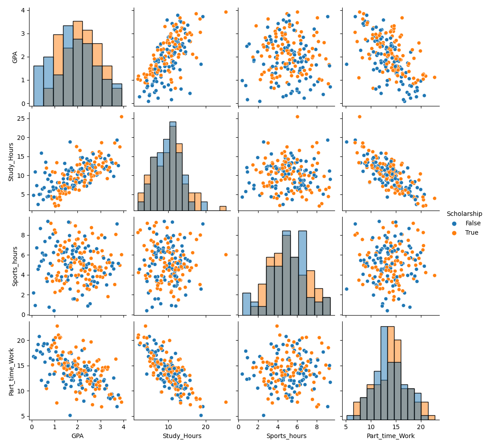
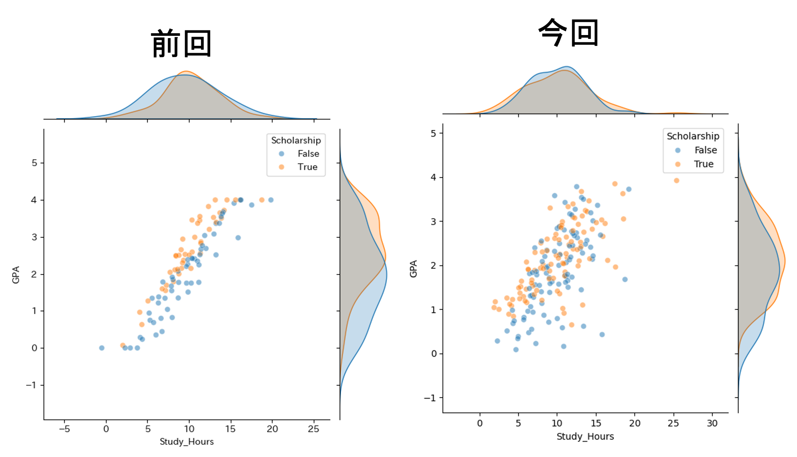
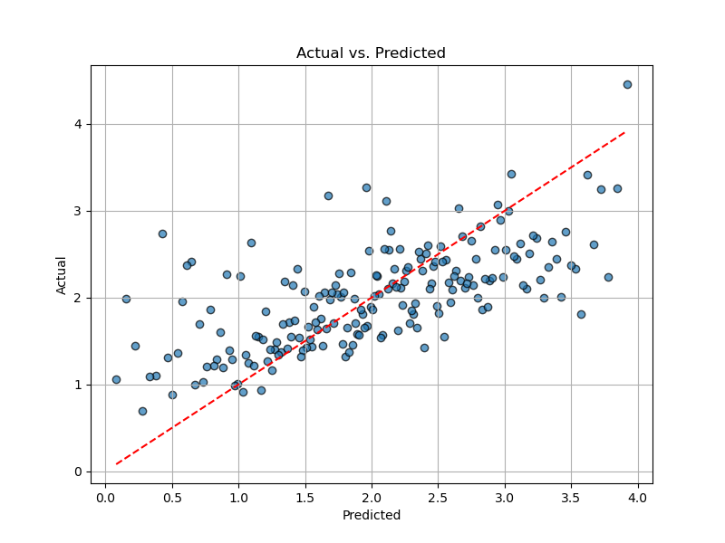
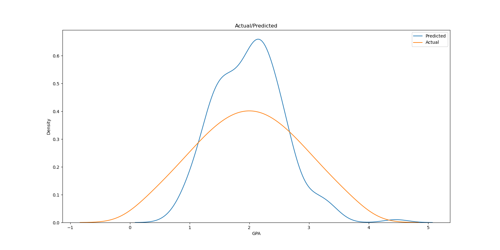

重回帰での結果確認
まずは, データの読み込みを行います. 必要なライブラリは各自で pip install してください.
import matplotlib.pyplot as plt
import numpy as np
import pandas as pd
import matplotlib.pyplot as plt
import seaborn as sns
import statsmodels.api as sm
from sklearn.metrics import mean_squared_error, r2_score, mean_absolute_error
df = pd.read_csv('hierarchical_regression.csv'
,dtype={'GPA': float
,'Scholarship': bool
,'Study_Hours': float
,'Sports_hours': float
,'Part_time_Work': float
,'StudentID':int})
print(df)
"""
GPA Scholarship Study_Hours Sports_hours Part_time_Work StudentID
0 1.348928 True 10.348188 5.398119 14.944201 0
1 1.968662 False 8.803971 3.799566 15.340118 1
2 2.246881 True 10.367043 5.139604 19.937536 2
3 1.167275 True 2.049724 4.229373 21.009315 3
4 3.295929 True 9.121312 5.227035 14.271377 4
.. ... ... ... ... ... ...
185 0.974230 False 4.256551 0.396158 13.299289 185
186 2.208293 False 14.652655 1.969618 10.523032 186
187 0.786660 False 10.040932 7.733749 13.232559 187
188 2.068987 True 6.073965 8.289935 13.540597 188
189 2.531604 True 11.848414 4.501928 11.335318 189
"""まずはデータを可視化してみます.
# ペアプロット
sns.pairplot(df
,vars=["GPA", "Study_Hours", "Sports_hours", "Part_time_Work"]
,hue="Scholarship"
,diag_kind="hist")
plt.suptitle("Pairplot with Scholarship", y=1.02)
plt.savefig('PairplotwithScholarship.png')
plt.close()
#joinplotで男女別に密度プロットを表示
fig = sns.jointplot(df
,x ="Study_Hours"
,y ="GPA"
,hue='Scholarship'
,joint_kws = dict(alpha=0.5))
plt.savefig('kde.png')
plt.close()
重回帰分析で使ったデータと概ね似た傾向 (奨学金ありが少し高い, 勉強時間と GPA に相関, 勉強時間とバイト時間に負の相関など) が確認できます. ただし, 重回帰分析で使ったデータと比べるとデータ全体のばらつきが大きいことが分かります.

GPA の重回帰分析と同様の手法で, 線形重回帰の実施と結果の確認を行います.
# 数量化
df = pd.get_dummies(df, columns=['Scholarship'], dtype='int')
#標準化
from sklearn.preprocessing import StandardScaler
scaler = StandardScaler()
df[['Scholarship_True'
,'Study_Hours'
,'Part_time_Work'
,'Sports_hours']] = scaler.fit_transform(df[['Scholarship_True'
,'Study_Hours'
,'Part_time_Work'
,'Sports_hours']])
#線形回帰
# 説明変数(X)と目的変数(y)に分割
X = df[['Scholarship_True', 'Study_Hours']]
y = df['GPA']
# 切片(定数項)を追加
X = sm.add_constant(X)
lm = sm.OLS(y, X).fit()
print("\n[通常の線形回帰の結果]\n")
print(lm.summary())
lm_preds = lm.predict(X)
plt.figure(figsize=(8, 6))
plt.scatter(df['GPA'], lm_preds, alpha=0.7, edgecolors="k")
plt.xlabel("Predicted")
plt.ylabel("Actual")
plt.title("Actual vs. Predicted")
plt.plot([df['GPA'].min(), df['GPA'].max()], [df['GPA'].min(), df['GPA'].max()], color="red", linestyle="--") # 完全一致のライン
plt.grid()
plt.savefig('lm.png')
plt.close()
plt.figure(figsize=(16,8))
sns.kdeplot(lm_preds, label = 'Predicted')
sns.kdeplot(df['GPA'], label = 'Actual')
plt.title('Actual/Predicted')
plt.xlabel('GPA')
plt.ylabel('Density')
plt.legend()
plt.savefig('lm_kde.png')
plt.close()
"""
OLS Regression Results
==============================================================================
Dep. Variable: GPA R-squared: 0.444
Model: OLS Adj. R-squared: 0.438
Method: Least Squares F-statistic: 74.76
Date: Tue, 04 Nov 2025 Prob (F-statistic): 1.38e-24
Time: 16:50:17 Log-Likelihood: -187.55
No. Observations: 190 AIC: 381.1
Df Residuals: 187 BIC: 390.8
Df Model: 2
Covariance Type: nonrobust
====================================================================================
coef std err t P>|t| [0.025 0.975]
------------------------------------------------------------------------------------
const 2.0000 0.047 42.122 0.000 1.906 2.094
Scholarship_True 0.1385 0.047 2.917 0.004 0.045 0.232
Study_Hours 0.5620 0.047 11.835 0.000 0.468 0.656
==============================================================================
Omnibus: 11.718 Durbin-Watson: 1.974
Prob(Omnibus): 0.003 Jarque-Bera (JB): 14.133
Skew: -0.457 Prob(JB): 0.000853
Kurtosis: 3.975 Cond. No. 1.01
==============================================================================
"""全般的に有意ではあるものの, 精度がそれほど高くありません.


グラフを見てみると, 元のデータは予測値に対して分散が大きくデータの分散を予測モデルが説明しきれていないことが分かります. 決定係数 R^2 を確認しても, データに含まれている変数では全体の変動のうち 44% ほどしか説明できていません.